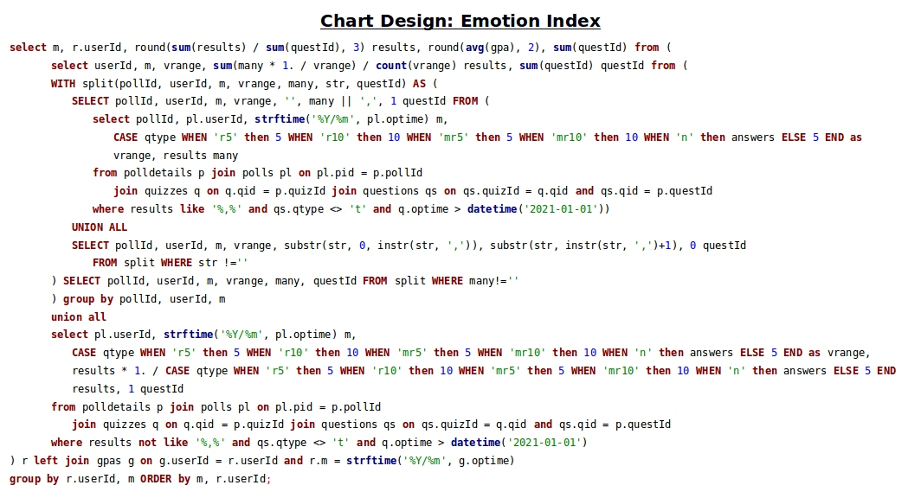
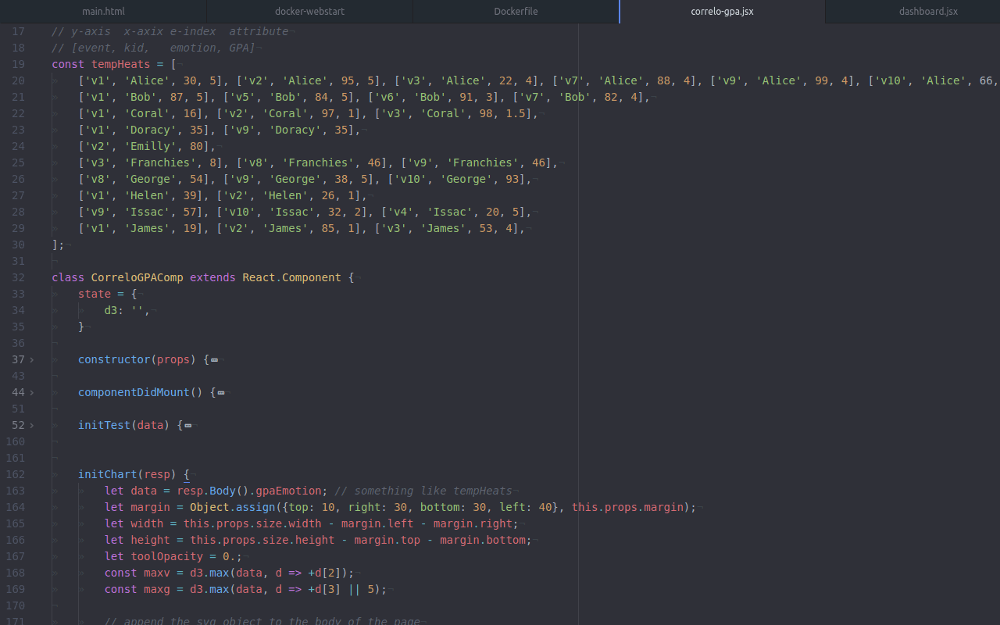
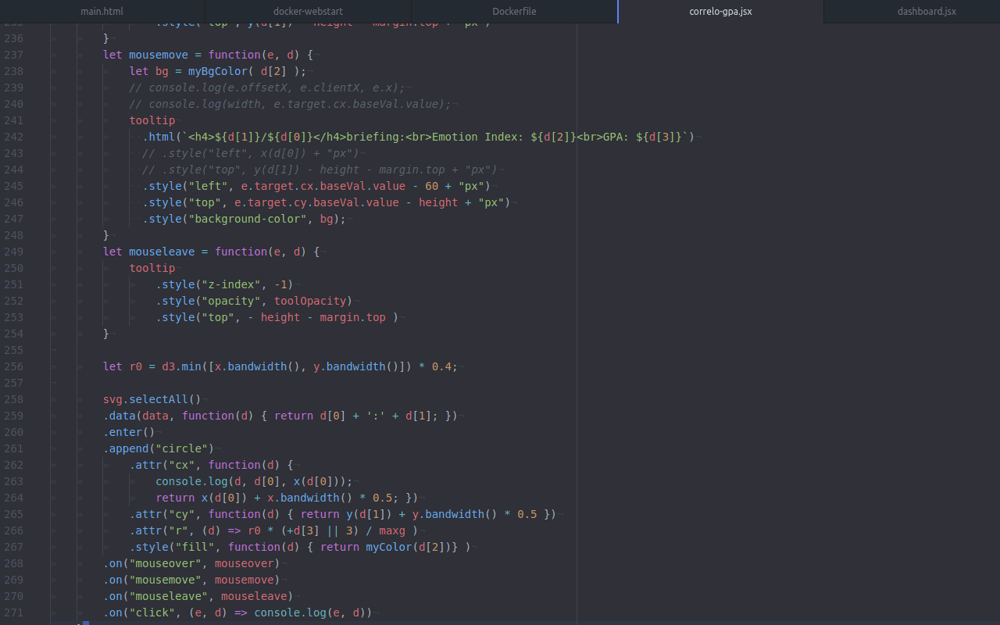
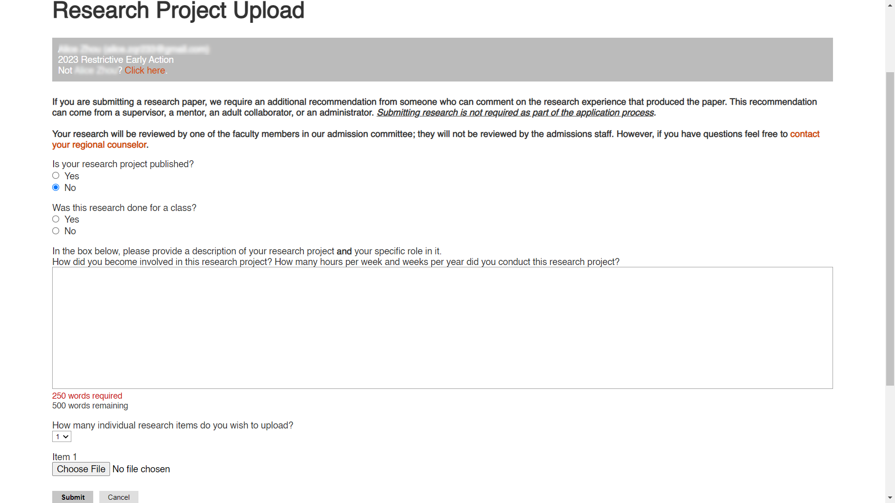

| The emotional self-regulation project's maker portfolio 2.0 resources | ||
|
Download Part 1 (Powerpoint) Download Part 2 (Powerpoint) Video A: the indicator design pattern; Video B: the poll & quiz calculation    Initial rournd poll results (xlsx) Emotion Indicator Design (xlsx) Report charts design Project implementation (odp) |
||
| The emotional self-regulation project's maker portfolio outline 1.0 | ||
|
Download Powerpoint pptx |
||
|
Research project uploading form.  |
||
Additional Resources |
||